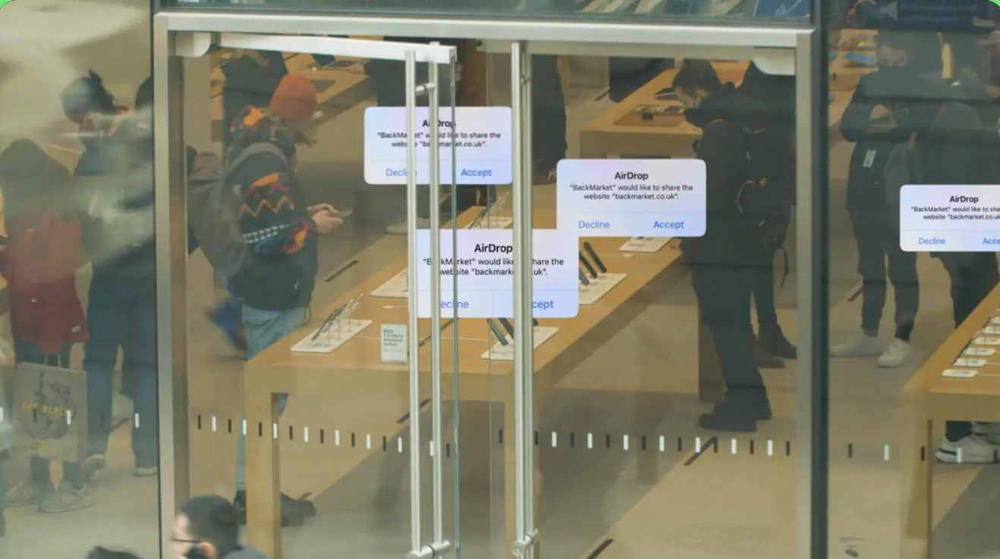
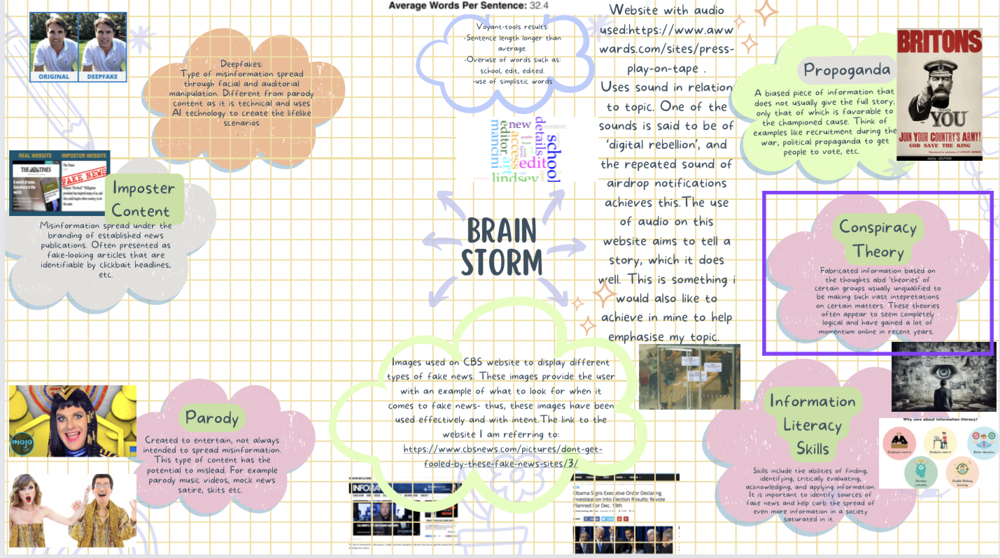

Task 1
Website used for audio analysis:
Although this website does not relate to my topic, I have chosen it to analyse because I think it displays a very effective use of audio.

Image is of people on phones surrounded by AirDrop notifications.
Image is of a luxury bottle of cognac.
My updated moodboard:
Image is of a moodboard mapping my creative process
Task 2
My chosen audio from: "BBC Sound Effects"
My first audio piece is of the chatter of news reporters. This is relevant to my topic as it highlights how news is a continuous, lively cycle- fake or not:
My second piece of audio is the sound of typing on a computer. This relates to my topic as it displays the sound effect of someone typing on a computer- possibly for work, creating a new source of information, etc. I though of it as the sound track of the creation of information.
Tasks 1 & 2
For this task I cropped my audio of newsroom chatter to a more suitable portion. After this I exported derivative audio files in different siund qualities and formats, each of which I experimented editing with. I have attached all of these files below.